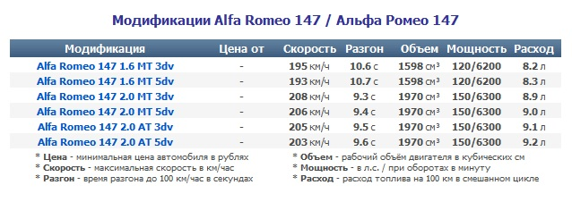

Модели автомобилей Alfa Romeo
1910-1920
A.L.F.A 24 HP
A.L.F.A 24 HP
A.L.F.A 24 HP
A.L.F.A 40/60 HP
1920-1930
Alfa Romeo 20/30 HP
Alfa Romeo G1
Alfa Romeo G1
Alfa Romeo RL
Alfa Romeo RM
Alfa Romeo 6C
Alfa Romeo 6C
2000-2010
Alfa Romeo GT
Alfa Romeo 147 - GTA
Alfa Romeo 159
Alfa Romeo Brera & Spider
Alfa Romeo 169
Alfa Romeo 149
Alfa Romeo 8C Competizione
Alfa Romeo 189 (Expected-2007)
Alfa Romeo 169
Alfa Romeo 149 (Expected-2007)
Alfa Romeo Junior
2010-2020
Alfa Romeo 240
Alfa Romeo 250
Alfa Romeo 260
Alfa Romeo 280
Alfa Romeo Brera II |

Alfa Romeo Automobiles S.p.A — итальянская автомобилестроительная компания, основанная
в 1910 году и выпускающая автомобили под маркой «Альфа-Ромео». С 1986 года является дочерней компанией концерна
FIAT Group.
Произвосдства автомобиля берет свое начало в первые годы XX-го века. Нынешняя компания Alfa Romeo находится в
северной столицы Италии - Милане. Однако зародилась марка совсем не в Милане, а в весьма далеком от него Неаполе.
В этом знаменитом итальянском городе француз Александр Даррак основал филиал своей парижской компании в 1906 году
и начла там производить две модели автомобилей. Название завод получил Societa Anonima Italiana Darracq, что в
переводе означает Итальянская компания Даррак. Компания A.L.F.A («Anonima Lombarda Fabbrica Automobili»)
образовывается чуть позже: в 1910 году. Она основывается на базе SAID. Позже предприятие переезжает в Портелло,
тихое местечко под Миланом. Так образовалась одна из известнейших итальянских и европейских марок автомобиля
Alfa Romeo.
Символом и эмблемой марки является огромная змея - уж, который проглатывает человека, рядом с ним находится
красный крест на белом фоне. Все это окаймляет синее кольцо с золотой надписью Alfa Romeo.
С самого первого дня своего существования приоритетом для компании было создание стильных дорожно-спортивных
автомобилей. Машины из под Милана всегда отличались стильным дизайном, отличным мощным двигателем, итальянским
изяществом. Возможно именно эти факторы повлияли на популярность автомобиля и обеспечили его успех в разных странах
мира.
Компания Alfa Romeo не только является ярким представителем по производству высококачественных гражданских
автомобилей. Важным приоритетом для компании является участие в разлчных соревнованиях автомобилей. С самого
начала своей истории инженеры компании вкладывали все свои знания в технический прогресс их дитя. Именно поэтому
вам за рулем вашего любимого Alfa не будет равных ни на одной магистрали!
 |
Alfa Romeo MiTo (Альфа Ромео МиТо)
Самый маленький и самый бюджетный из автомобилей Alfa Romeo под названием Mi.To дебютирует в июне 2008 года.
Трехдверный хэтчбек, ранее носивший рабочее название Junior, станет первой премьерой итальянской компании
после 8C Competizione и поэтому унаследовал от спорткара некоторые черты – форму фар и переднего бампера,
светодиодные вставки в оптике, оформление боковых окон.
|